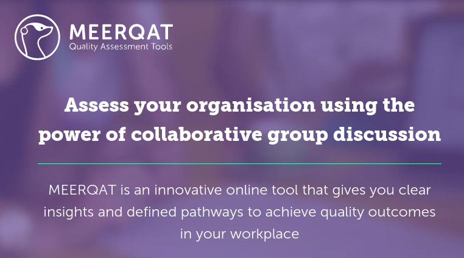

Django DDP
Realtime Django backend
for Meteor
Created by Tyson Clugg / @tysonclugg
About me
I support the planet by using public transport
and living within reasonable means.
I support humanity by funding the
United Nations Refugee Agency.
I started using PostgreSQL in 1999.
Funkybob has been my Django
mentor since January 2007.
Motivations
Meteor is realtime, but it's not Python.
Meteor uses MongoDB - eww!
Meteor has latency compensation!
Meteor can be used to write iOS and Android apps.
Why not schemaless?
No schema means no consistency, resulting in bugs.
No referential integrity results in more bugs.
No transactions across collections — even more bugs!
PostgreSQL provides schemaless anyway (hstore, jsonb).
Why not schemaless? (part 2)
Is PostgreSQL Better Than MongoDB?
You bet it is!
Meteor

Django DDP lets you use Django below the line.
Django DDP Basics
Implements a DDP server, like Meteor.
Replaces Meteor server — not running Node!
Allows clients (browser/app) to subscribe to publications.
Pushes Django model updates in realtime via WebSockets.
Latency compensated RPC method calls and responses.
Django DDP Limitations
Relatively immature — LiveQuery is work in progress.
PostgreSQL only — this is a Good Thing™.
Relies on Django signals.
Doesn't serve Meteor client files.
Realtime +
Latency Compensation
The client view will update:
- Within milliseconds after data is updated and subsequently dispatched from the server.
-
Immediately as client interactions take place.
- If the server doesn't the updated client data, the view state is rolled back.
High performance Python
Python with gevent for concurrency.
Fast event loop based on libev.
Lightweight execution units based on greenlet.
No callbacks, promises or other fluff (red code vs. green code).
Did I mention it's really FAST?!?
ddptest.meteor.com
Meteor first...

ddptest.meteor.com
...now Django DDP

Asynchronous Notify
-
Already a part of the Django/PostgreSQL stack
- Unless you're a MySQL weenie 😛
- No new services/infrastructure to be deployed.
No new infrastructure!
No Crossbar.io!
No Redis!
Just Django + PostgreSQL
Using LISTEN/NOTIFY
-
Extended SQL syntax:
- NOTIFY <channel>, [optional payload];
- LISTEN <channel>;
The beauty of NOTIFY
-
Works with transactions
- Notifications are sent after transactions are successfully committed.
- Notifications are discarded when transactions are rolled back.
- No gymnastics to handle error conditions!
Demo time!
(Applause!)
Key learnings: Meteor
- Synchronised document ID generation is awesome! (latency compensation)
- Meteor password hashing sucks - use tysonclugg:accounts-secure.
- Autopublish & insecure are dangerous. Meteor defaults help you shoot yourself in the foot.
Key learnings: Python/Django
- WebSocket support in Django is woeful (doesn't exist... yet)
- Adding packages to Django projects sucks (nothing like `meteor add foo`)
Acknowledgments
MEERQAT

meerqat.com.au
Project sponsor - many thanks for allowing
django-ddp to be released as open source!
- David Burles
-
Expert guidance on how DDP works in Meteor.
- Brenton Cleeland
-
Discussions on security model for publications.
- Muhammed Thanish
- Making the DDP Test Suite available.